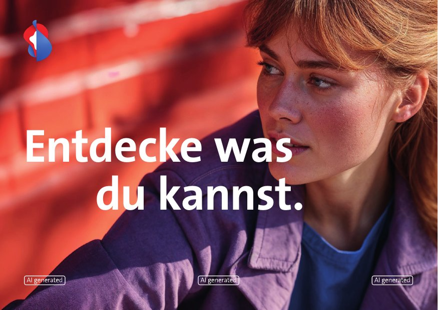
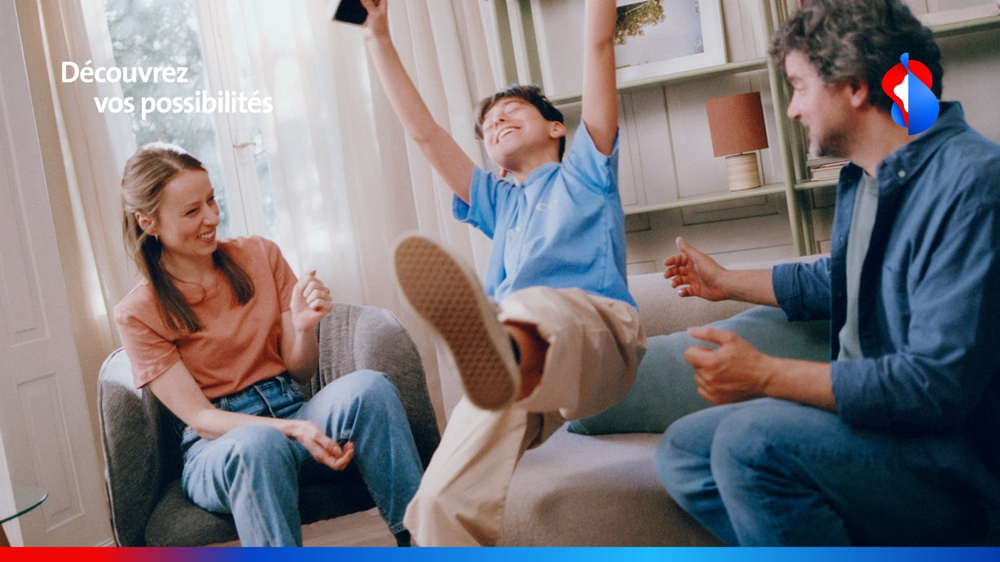
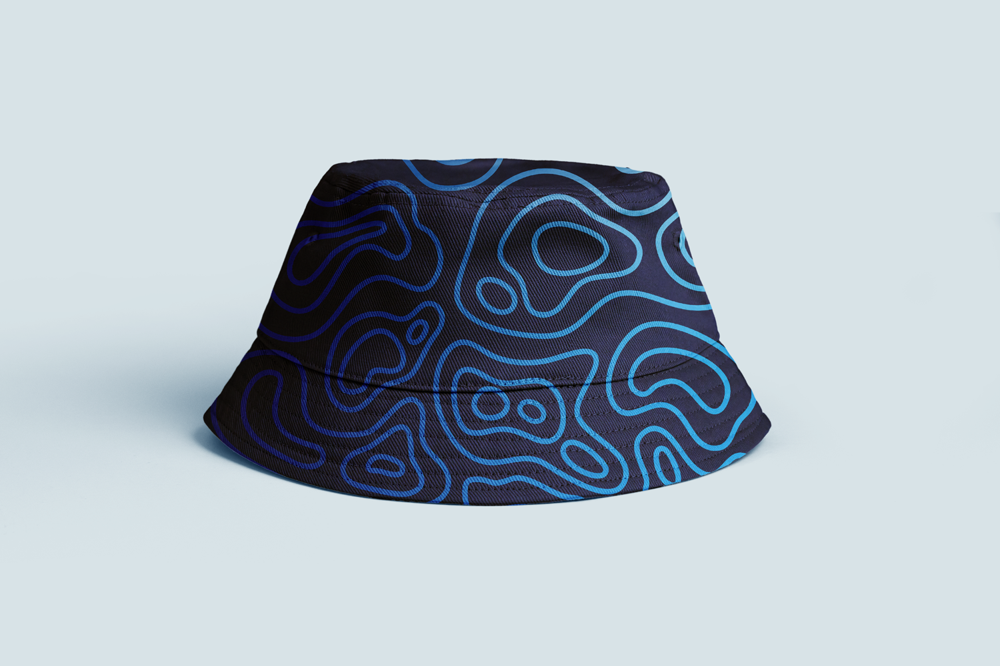
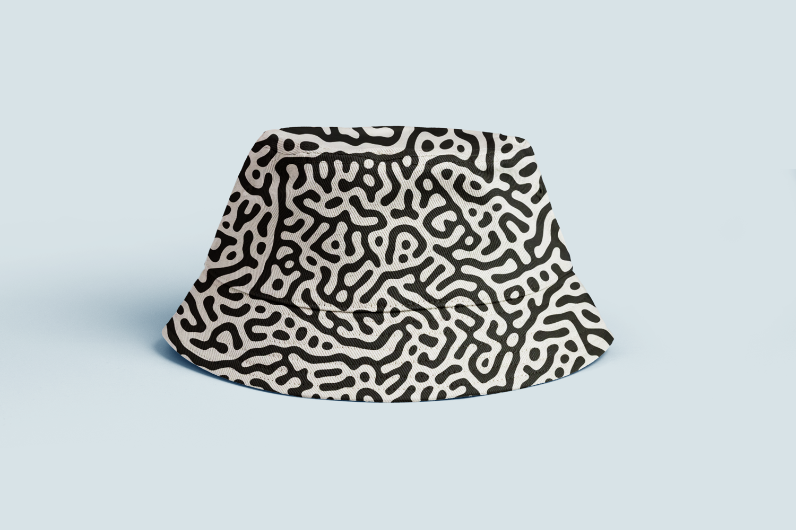
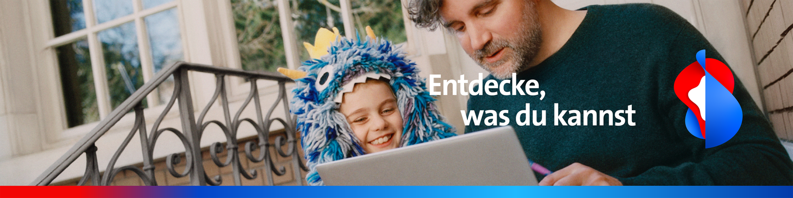
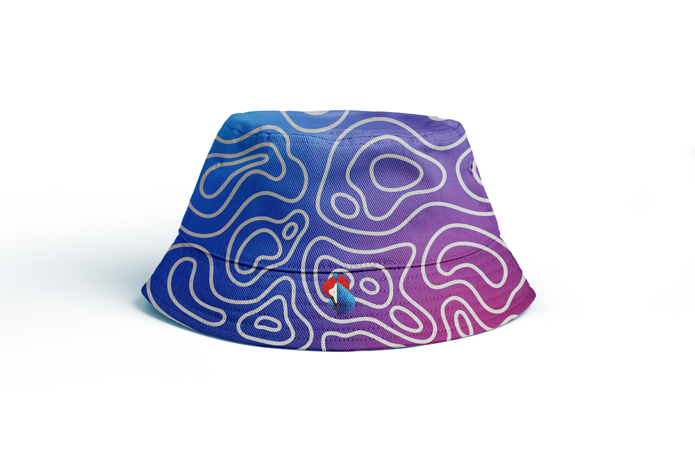
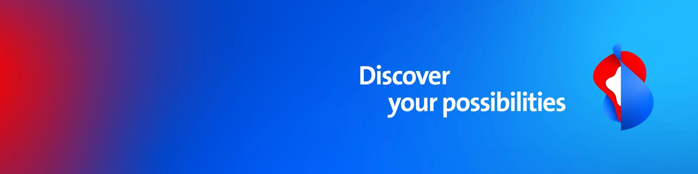

Swisscom Redesign · Neo
BereichBranding, UX/UI, Strategie
RolleMediamatiker & Junior Designer
AuftraggeberSwisscom
Beim Redesign von Swisscom durfte ich verschiedenste Inhalte erstellen. Die folgende Zusammenstellung zeigt eine Auswahl davon, alle Inhalte sind von mir.
Darunter LinkedIn Banner und Hintergründe, das Tagging von AI Bildern in Werbungen sowie die Bucket Hats und die dazugehörige Aktivierungsstrategie auf den Festivals.
Dazu kamen viele weitere Markeninhalte, die ich mitgestalten und erstellen durfte, die Verwaltung aller Piktogramme und das Beraten von Swisscom Mitarbeitenden in markentechnischen Themen.






